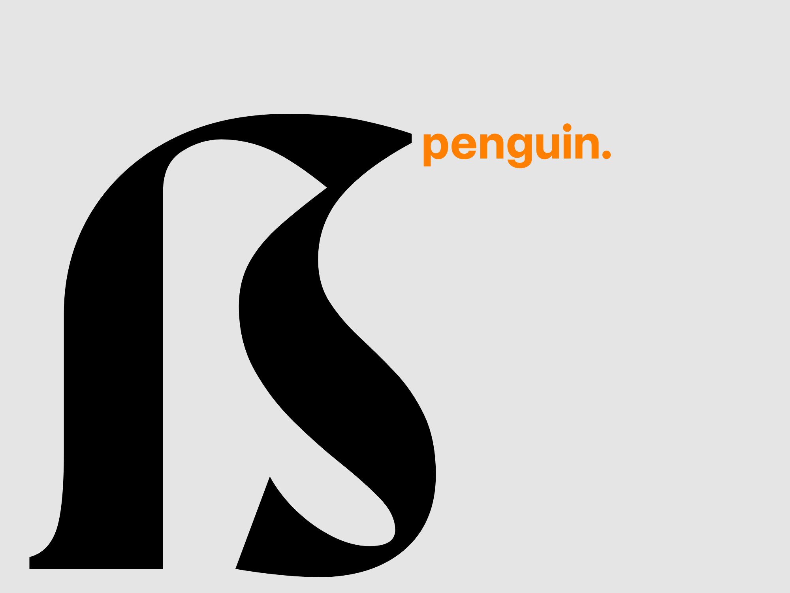
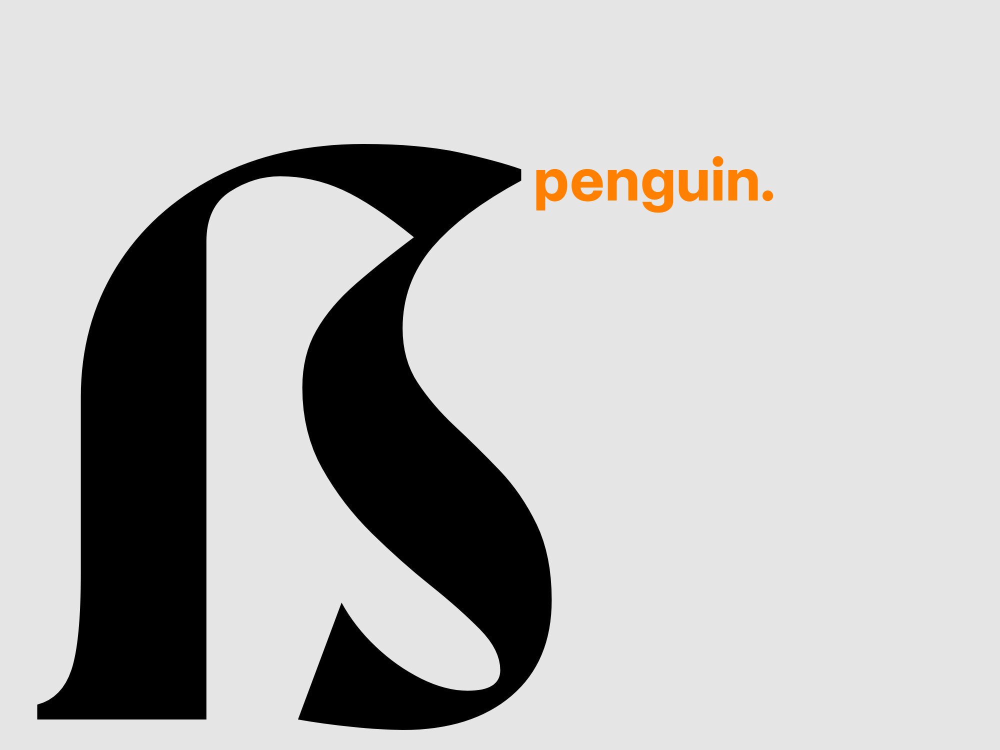
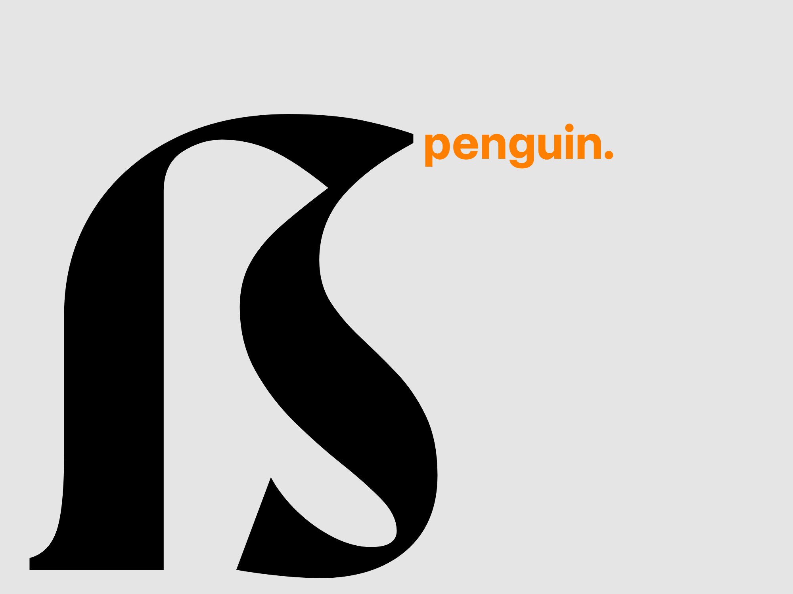
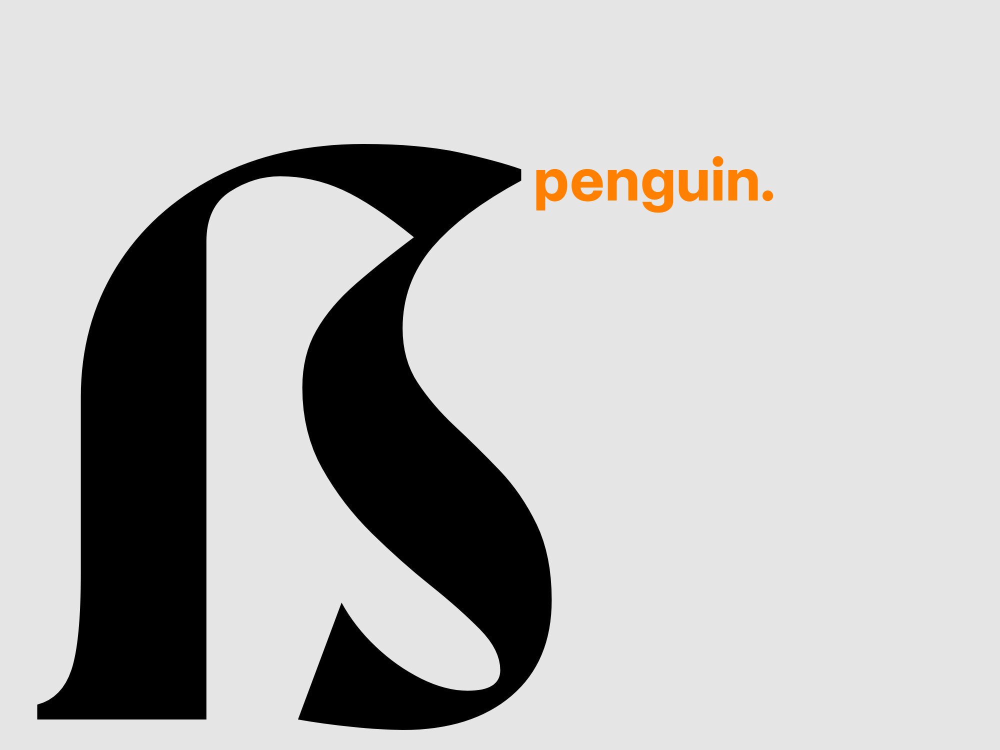

Hebdomadal is a part of a design series I hosted on Instagram since the beginning of 2024, where I planned to design one or two different glyphs in a different style on every Sunday. The point was to have fun and possibly to discover how my creative brain works.
Despite there being 52 Sundays, I managed to make 81 different glyphs, including the Latin alphabet (majuscule & minuscule), numbers, currency symbols, and punctuation marks.
Hebdomadal is released as an open-source project, and the source files are on GitHub. The font is licensed under SIL Open Font License and is completely free for commercial use.
Designers
Year
License
Classification
Styles
Glyphs
Languages
RandomMaerks
2024
SIL Open Font License
Display
1
749
Acheron, Achinese, Afar, Afrikaans, Alekano, Alonquin, Amahuaca, Amarakaeri, Amis, Anaang, Andaandi, Dongolawi, Anuta, Aragonese, Arbëreshë Albanian, Asháninka, Ashéninka Perené, Balinese, Banjar, Basque, Batak Dairi, Batak Karo, Batak Mandailing, Batak Simalungun, Batak Toba, Bemba (Zambia), Bena (Tanzania), Bikol, Bislama, Borana, Arsi, Guji Oromo, Breton, Buginese, Candoshi, Shapra, Caquinte, Cashibo, Cacataibo, Catalan, Cebuano, Chamorro, Chavacano, Chiga, Chiltepec Chinantec, Chokwe, Chuukese, Cornish, Corsican, Danish, Dehu, Eastern Arrernte, Eastern Oromo, Faroese, Fijian, Filipino, Finnish, Friulian, Galician, German, Gheg Albanian, Gilbertese, Gooniyandi, Guadeloupean Creole French, Gusii, Haitian, Hani, Hiligaynon, Hopi, Huastec, Icelandic, Iloko, Indonesian, Irish, Italian, Ixcatlán Mazatec, Jamaican Creole English, Japanese, Javanese, K'iche', Kabuverdianu, Kalaallisut, Kalenjin, Kaonde, Kenzi, Mattokki, Khasi, Kimbundu, Kinyarwanda, Kituba (DRC), Kongo, Konzo, Ladino, Lombard, Low German, Luba, Lulua, Luo (Kenya and Tanzania), Luxembourgish, Makonde, Malagasy, Malaysian, Manx, Maore Comorian, Mapudungun, Mauritian Creole, Meriam Mir, Meru, Minangkabau, Murrinh, Patha, Mwani, Mískito, Naga Pidgin, Ndonga, Neapolitan, Ngazidja Comorian, Nobiin, Nomatsiguenga, North Ndebele, Northern Qiandong Miao, Norwegian, Nyankole, Occitan, Orma, Oroqen, Pampanga, Papiamento, Pichis Ashéninka, Piemontese, Pijin, Pintupi, Luritja, Pohnpeian, Portuguese, Potawatomi, Quechua, Romansh, Rotokas, Rundi, Sango, Sangu (Tanzania), Saramaccan, Sardinian, Scots, Scottish Gaelic, Sena, Seri, Seselwa Creole French, Shawnee, Shipibo, Conibo, Shona, Sicilian, Soga, Somali, Soninke, South Ndebele, Southern Qiandong Miao, Southern Sami, Spanish, Sranan Tongo, Standard Malay, Sundanese, Swahili, Swedish, Swiss German, Tagalog, Tedim Chin, Tetum, Tetun Dili, Tok Pisin, Tosk Albanian, Tumbuka, Tzeltal, Uab Meto, Upper Guinea Crioulo, Walloon, Waray (Philippines), Warlpiri, Wayuu, West Central Oromo, Western Abnaki, Western Frisian, Wiradjuri, Xhosa, Yanesha', Yucateco, Zulu, Záparo